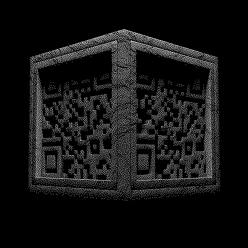

author
title

retrospective
qr show was an exhibition organized greg sadetsky & sasha friedenberg featuring many, any, & all things "qr code". it was hosted by the recurse center on sunday march 16th 2025 in brooklyn nyc. this is a directory of the authors and an archive of their exibits.
this archive is not comprehensive. if you presented something that hasn't been listed & would like to share, please email self@destruct.dev
to everyone who attended - thank you for. to all the volunteers - thank you for all your help and being excellent
this archive is not comprehensive. if you presented something that hasn't been listed & would like to share, please email self@destruct.dev
to everyone who attended - thank you for. to all the volunteers - thank you for all your help and being excellent